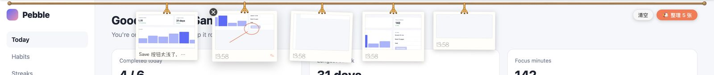
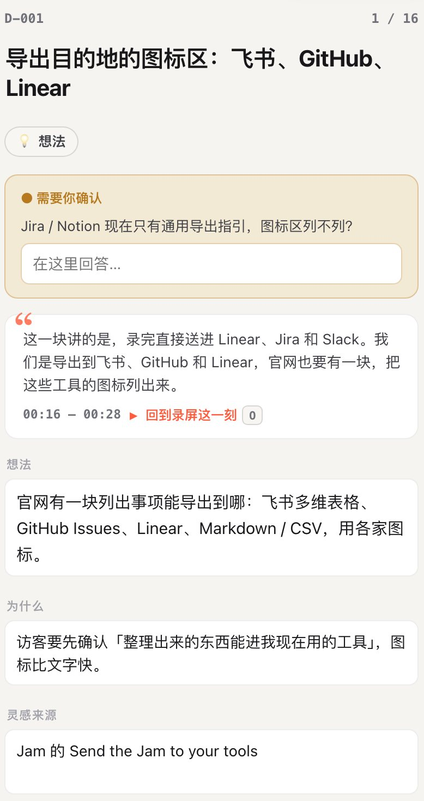

- 这里不对……
-
这个按钮
抽丑…… - 不对，是那个
-
边看边喷，AI 全懂。
-
指着屏幕口喷，想到哪喷到哪。你的 coding agent 把它整理成问题单、想法清单和待办。
⌃按住它移动鼠标，在这页上圈一笔
给谁都能用的录制 App · macOS 13 及以上，Apple 芯片和 Intel 通用
首次打开请右键 →「打开」
npx skills add AGIHunt/blurt装进 Claude Code、Codex 等 agent 的 skill
然后对它说「开始口喷」
npx skills add AGIHunt/blurtWindows 没有安装包，装上 skill 就行，然后对 agent 说「开始口喷」
录过一次后，开始菜单里会有「Blurt」
winget install astral-sh.uvwinget install Gyan.FFmpeg先装 uv 和 ffmpeg。agent 会先跑 doctor.py 检查，缺什么会问你
托盘 App、画笔和单独截图目前只有 macOS
npx skills add AGIHunt/blurt装上 skill，然后对 agent 说「开始口喷」
需要 X11 桌面，Wayland 暂不支持
sudo apt install ffmpeg libportaudio2 python3-tkcurl -LsSf https://astral.sh/uv/install.sh | shUbuntu / Debian 上的依赖，再装 uv。agent 会先跑 doctor.py 检查
托盘 App、画笔和单独截图目前只有 macOS
Settings
WorkspaceMembersBilling
Workspace nameAcme Studio
Default languageEnglish
Weekly digest
Public share links
Time zoneUTC−08:00
CancelSave changes
「不对，是那个」
说「那个」的时候按住 ⌃ 圈出来，agent 就知道你说的是哪个，还会顺着找到最可能出问题的那行代码。
手动两天，口喷半小时
2 天
截图、画红框、填表格
半小时
边看边喷
给 agent 一双眼睛，
给你省下两天。
一次真实走查：5 分钟录屏52 条事项每条带原话和时间点
以前要截图、画红框、填表格，花两天才反馈完的问题，现在半小时讲完。
按一下，开喷。
在任何地方按一下
框出要录的区域，或者点一下选中某个窗口。标签栏、收藏夹不会被录进去。
边用边说
想到哪说到哪，说错了改口也没关系。说「这里」的时候，按住 ⌃ 拖动鼠标把它圈出来。
悬浮条下面有一行实时字幕。每听出一条事项，就有一颗蛋落进悬浮条的小窝里。录的时候不出声，不会录进去。
| 听成 | 改成 | 听成 | 改成 |
|---|---|---|---|
| Jam | README | ||
| Cap | 首屏 | ||
| GitHub | MCP |
点「完成」，一分钟后开审
语音边录边在本地转写，停下时文字稿已经好了。agent 先写纯文字的条目，审核页大约 1 分钟打开；挑截图、找最可能出问题的代码在后台接着做，陆续补进页面，你边审它边补。
- 文字稿已经好了边录边在本地转写
- 审核页打开先出纯文字的条目，可以开始审
- 截图陆续补上挑帧、画框、代码定位在后台做，你边审它边补
像刷短视频一样审核
一条一条过，全程键盘。审完导出，或者直接说「帮我改掉」。
一条一颗蛋问题想法，金点子笔记待办自定义
A保留X丢弃J下一条
在右边这张单子上按键试试
- 问题保存按钮比取消低 6px「这个按钮丑……不对，是那个」00:01 · src/settings/SaveBar.tsx
- 想法Reports 空状态换成一张上手提示卡「这个空页面太死了，放点东西」01:12 · src/reports/Empty.tsx
- 待办找设计要空状态的文案和插画「这个得让设计出一下」01:20 · 负责人：设计
- 问题时区选完不保存，刷新就回到默认「诶，我刚改的时区呢」02:47 · src/settings/TimeZone.tsx
还有 48 条
录制时
- ⌥⇧R
- 开始 / 结束录制，在哪都能按
- ⌥⇧A
- 截一张图：不暂停，直接截下这一刻（没在录也能按）
- ⌥⇧P
- 暂停 / 继续
- ⌥⇧S
- 完成
- 按住 ⌃
- 画笔，松开就停
- ⌥⇧D
- 画笔常开（点悬浮条上的画笔按钮也行）；再按一次或按 Esc 关掉
- ⌥⇧M
- 打个标记，同时截一张图
- ⌥⇧B
- 打开口喷鸡菜单
审核时
- A
- 保留
- X
- 丢弃
- J K
- 下一条 / 上一条
- Z
- 撤销
- G
- 列表
- V
- 总览
一张图，一句话。
很多反馈就是一个画面加一句话，用不着录一段。按 ⌥⇧A，拖一块，松手就截好；接着直接说，说完停一下就收好了。
- 没在录截图挂到屏幕顶上的鸡舍里，配一句话（打字也行）。攒几张，点「🐔 整理」交给 agent。
- 正在录不暂停、不弹框，截下全分辨率的这一刻。备注就是你前后说的那几句。
- 挂在鸡舍上单击复制，拖进 Claude Code 或聊天窗口，双击改备注，× 扔掉。
在右边上手试试
拖一块 · 点一下 = 整个窗口 · Enter 全窗口 · Esc 取消
演示加速了。真实情况：停下约 1 分钟审核页打开，截图陆续补上。

不只是提 bug。
「昨晚 AI 写的这页……又是空的」
打磨 vibe coding 出来的产品
AI 通宵做完的东西，你挨个页面点一遍、边用边喷，拿到一份带代码定位的问题清单，直接交给 AI 去改。
「这个首屏好，圈一下，我们也要」
逛完直接出需求文档
想做个官网或独立站？逛一圈参考站，看到好的就圈出来说一句，agent 整理成需求文档和设计文档。本官网就是由 Claude Code + 口喷鸡这样设计的——吃自己的狗粮（dogfooding）。
「这个引导做得好……这个定价页也不错」
边逛边记灵感
整理成想法清单：是什么、为什么、灵感来自哪、下一步做什么。
「我不会写代码，但这里明显不对」
谁都能反馈
产品、设计、运营、客户，不需要有代码库。用 App 录好把视频发过来，开发那边的 agent 结合代码来处理。
「这个是怎么运作的？」
调研和讲解
竞品走查、用户研究、讲清楚一个东西怎么运作，整理成带截图佐证的笔记和结论。
「终端里这一行，又报错了」
不只是网页
终端、TUI、桌面 App 照样录。手机上的问题用自带录屏，硬件直接拿手机拍，把视频丢给 agent 就行。

进你现在就在用的工具：飞书多维表格、GitHub Issues、Linear，或者一份 Markdown · CSV。
写进飞书时带着截图和片段。Jira、Notion、Obsidian 也行：agent 用你已经装好的 CLI 或 MCP 去写。或者不导出，直接让它开始修。
默认什么都不上传。
留在你电脑上
- 录屏、截图和录音存在你选的工作区里，默认是
~/Blurt。 - 语音识别默认用 SenseVoice 在本机跑，约 240 MB，普通 CPU 就够。
- 抽帧和画框脚本在本地从视频里取。
- 审核页本机起的一个页面，只有你自己能打开。
你选了才出去
- 给 agent 的内容文字稿和它挑出的几张截图，会发给你自己在用的 coding agent，也就是它背后的模型服务。视频本身不会发。
- 云端语音识别只有你配了自己的 Groq、OpenAI 或百炼 Key 才会用。
- 导出写进飞书、GitHub 之前，会先跟你确认去哪、几条。
- 发给同事的视频你自己复制，自己粘贴。
没有黑盒。
一个要录你屏幕的工具，应该让你看得到它做了什么。确定的事交给脚本，判断交给模型，两边都在仓库里。
问得最多的。
很费 token 吗？
不会把视频喂给模型。语音在本地转成文字，不花钱；agent 读的是文字稿，只给真正成条的事项挑几张截图看。所以录得再久，花费也差不多：7 分钟 9 条和 20 分钟 34 条，都在 2 美元上下。
另有对话上下文的缓存读取，约 300–500 万 token，按输入价的 1/20 计费，已算进右边的价格。
录的时候实时起草条目用的是小模型（Claude Haiku，或 Codex 的小模型），不在这张表里。
| 第 1 次 | 第 2 次 | 第 3 次 | |
|---|---|---|---|
| 录屏 | 7.0 分钟 | 14.3 分钟 | 20.0 分钟 |
| 说话 | 2.8 分钟 | 12.3 分钟 | 17.7 分钟 |
| 事项 | 9 条 | 23 条 | 34 条 |
| 语音识别（本地） | 4 秒 | 12 秒 | 15 秒 |
| 新输入 token | 约 14 万 | 约 14 万 | 约 12 万 |
| 输出 token | 约 1.9 万 | 约 2.7 万 | 约 2.7 万 |
| 按 API 价格 | 约 2 美元 | 约 2.6 美元 | 约 2.1 美元 |
不做前端能用吗？
能。只要问题能在屏幕上看到，或者能用手机拍下来，就能喷：终端、桌面 App、手机录屏、拿手机拍的硬件都行。
说什么语言都行吗？
中、英、日、韩、粤语用默认的 SenseVoice。德语、法语、西语等其他语言用本地 Whisper 或云端 Key，首次运行时 agent 会按你说的语言来选。说什么语言，整理出来就是什么语言。
Windows、Linux 能用吗？
能。录屏、本地转写、截帧、审核页、导出，在 Windows 和 Linux 上一项一项都跑通了。Windows 上由 agent 启动录制器，录过一次后开始菜单里就有「Blurt」，Alt+Shift+P 暂停、Alt+Shift+S 完成；Linux 需要 X11 桌面。托盘 App、画笔、单独截图和鸡舍目前只有 macOS。Windows 和 Linux 没有安装包，装上 skill 就能用；要装哪些依赖，选你的系统就能看到。
下次有话想说，
直接喷。
给谁都能用的录制 App · macOS 13 及以上，Apple 芯片和 Intel 通用
首次打开请右键 →「打开」
npx skills add AGIHunt/blurt装进 Claude Code、Codex 等 agent 的 skill
然后对它说「开始口喷」
npx skills add AGIHunt/blurtWindows 没有安装包，装上 skill 就行，然后对 agent 说「开始口喷」
录过一次后，开始菜单里会有「Blurt」
winget install astral-sh.uvwinget install Gyan.FFmpeg先装 uv 和 ffmpeg。agent 会先跑 doctor.py 检查，缺什么会问你
托盘 App、画笔和单独截图目前只有 macOS
npx skills add AGIHunt/blurt装上 skill，然后对 agent 说「开始口喷」
需要 X11 桌面，Wayland 暂不支持
sudo apt install ffmpeg libportaudio2 python3-tkcurl -LsSf https://astral.sh/uv/install.sh | shUbuntu / Debian 上的依赖，再装 uv。agent 会先跑 doctor.py 检查
托盘 App、画笔和单独截图目前只有 macOS